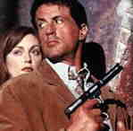

ASSASSINS/C, A- US/1995/COLOR/WIDESCREEN 1.85:1/STEREO SURROUND/133 MINUTES/DIRECTED BY RICHARD DONNER/STARRING SYLVESTER STALLONE, ANTONIO BANDERAS/WARNER/37 CHAPS/2 DISCS/CLV-CAV/$39.98 Watching Assassins, a handsome but mostly mindless action concoction, you can't help but be reminded that vapid Hollywood is more likely to put together a picture package predicated more on concept than content. Among other things Assassins suffers from anemia of script. It's not clever, it's not funny and it is certainly bound more securely by its improbabilities than any successful genre conventions. It is furiously driven by rapid fire director Richard Donner and that prevents it from sapping the entertainment energy from it cinema soul.  Cough up fifteen million or so and corral Sylvester Stallone to go through the motions of playing muscled action hero with as much emotion and energy as a lobotomized Bugs Bunny; add up and coming Latin heartthrob Antonio Banderas playing a cute and leering villain; add a touch of delightful Julianne Moore squeezed in between the killer matinee idols and you come up with a pretty good commercial movie package by profligate Hollywood standards. The plot concerning an up and coming assassin(Banderas) trying to usurp the position of the number one killer(Stallone)reads silly and plays even sillier. Banderas tries hard to be glib but he can hardly get an explosive rise out of Stallone. Mix in Julianne Moore as a computer wiz who has a disc for the bad guys and the killers have their killing ground. There are plenty of explosions, ridiculous car chases, and requisite action actor quips that fail to light up the screen. There are many too many shot of notebook computers and feebly typed modem conversations. This must have been someone's grand idea of pacing. Assassins is a very handsome laser disc. The images are pristine in their execution. The surround sound is big and appropriate. For a mindless two hours plus at least you will have something very nice to look at. |